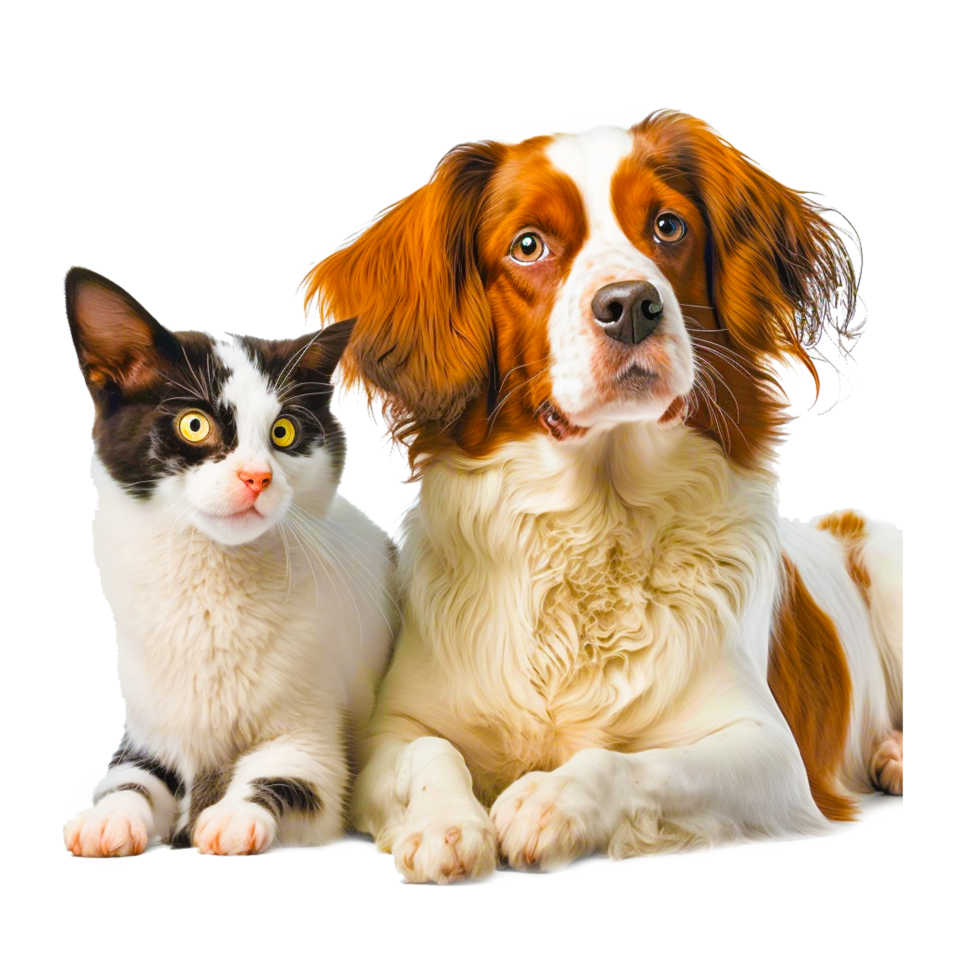

Comprometidos con el Bienestar Animal
Este sitio fue desarrollado con tecnologías web modernas para apoyar y visibilizar el trabajo de quienes hacen posible nuestra misión.
¿Qué ofrece Huellas de Amor?
Información Clara
Presentamos de forma ordenada y accesible a los animales disponibles para adopción y nuestras actividades.

Diseño Humanizado
Un estilo visual cálido y cercano que refleja el amor y el cuidado hacia los animales rescatados.

Interacción Dinámica
Calendarios, formularios y funciones interactivas para facilitar adopciones, eventos y contacto con la comunidad.
Cada clic puede cambiar una vida... ¡Adopta, comparte, actúa!
¿Quieres aprender más?
Visita nuestra sección de Sobre Nosotros o ponte en contacto con nosotros.